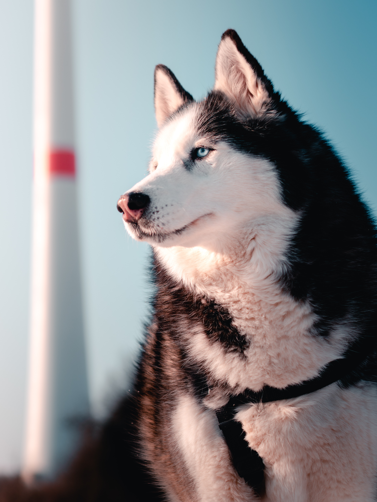

The Alaskan Husky is a type of Husky and not its own unique breed. This is a favorite at Summit Farms and these pups tend to go quickly. They are fun, energetic and full of bright personality. The husky was primarily to be a working dog, specifically for use in sledding. This mighty dog was developed by mushers or human dog sled racers from the different native Inuit dog breeds. Some of these breeds include the Siberian Husky, Alaskan Malamute, Eskimo dog, Samoyed, Eskimo Husky, Grennland Husky, Klee Kai and more. The Husky bloodlines used depends on a breeder’s particular purpose. The Alaskan Husky quickly gained popularity in the racing dog list because of his fantastic speed. Most Huskies that are seen in sled dog races today are Alaskan Huskies.
Resources: K9Web Alaskan Husky
© 2020 All rights reserved.